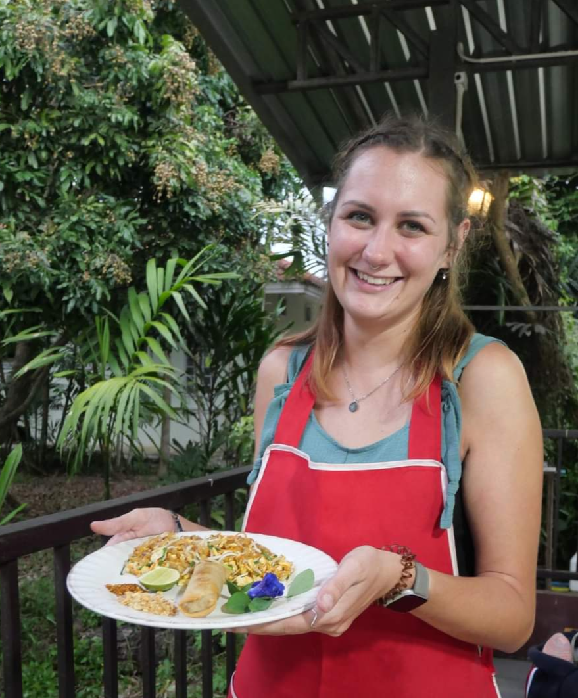
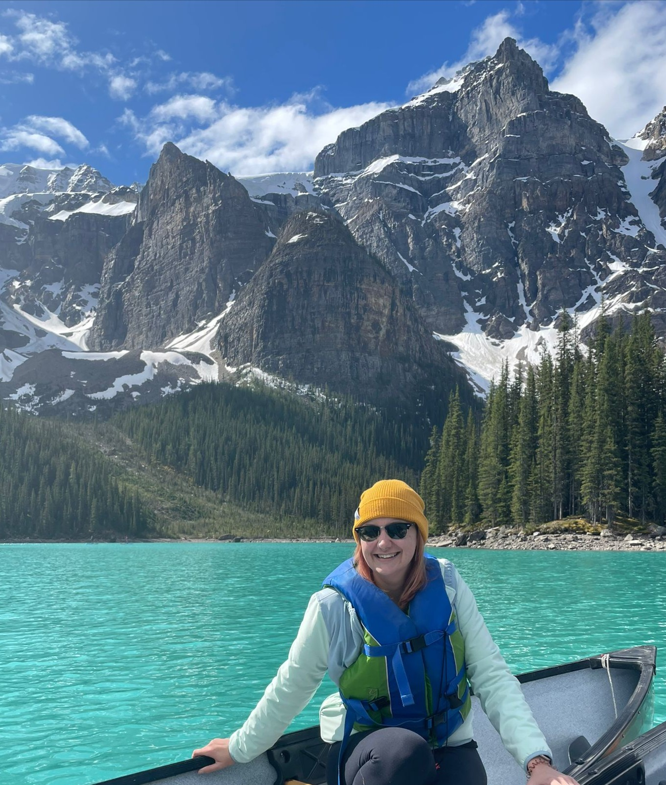

Rachel Mayne
Technical Support Engineer | SaaS | API & Integration Troubleshooting
Technical Support Engineer | SaaS | API & Integration Troubleshooting
I'm a Technical Support Engineer with more than 12 years' experience supporting SaaS platforms, digital products, websites and customer facing technology.
Today I specialise in investigating production issues, reproducing software defects and working closely with Product and Engineering teams to understand the problem, gather reliable technical evidence and help identify the root cause.
Whether I'm investigating booking workflows, payment integrations or third party services, I enjoy breaking complex problems into smaller, testable steps until a repeatable pattern starts to emerge. I enjoy understanding how systems work, spotting patterns across customer reported issues and turning complex technical problems into clear, structured investigations.
Technical Investigation
Reproducing customer reported issues, analysing application behaviour and gathering evidence through structured testing.
Collaboration
Working closely with Product, Engineering and QA teams to share findings, validate fixes and improve the customer experience.
Continuous Learning
Building practical knowledge of APIs, integrations, authentication, web technologies and modern Support Engineering practices through hands on projects.
Technology is always evolving, and I enjoy learning alongside my day to day work. This site documents both real production investigations and the practical skills I'm developing through personal projects and independent learning.
Outside of work I enjoy travelling and exploring new places, whether that's wandering around a new city, spending time outdoors or planning my next trip. I love experiencing different cultures, trying local food and making the most of every opportunity to discover somewhere new.
I'm naturally curious and tend to approach hobbies in much the same way I approach technical investigations by researching, learning and continually improving. Whether I'm building personal projects, learning new technologies or tackling DIY projects around my home, I enjoy understanding how things work and finding practical ways to make them better.

Hiking and road tripping through Banff and Jasper National Parks, combining a love of travel with the outdoors.

Taking part in local cooking classes and cultural experiences while travelling, discovering new food, traditions and ways of life.

Enjoying activities such as canoeing, hiking and exploring national parks whenever I have the opportunity.
If you'd like to see how I approach technical investigations in practice, the links below contains real examples of structured troubleshooting, evidence gathering and collaboration with Product and Engineering teams.